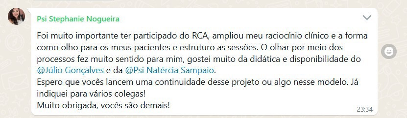
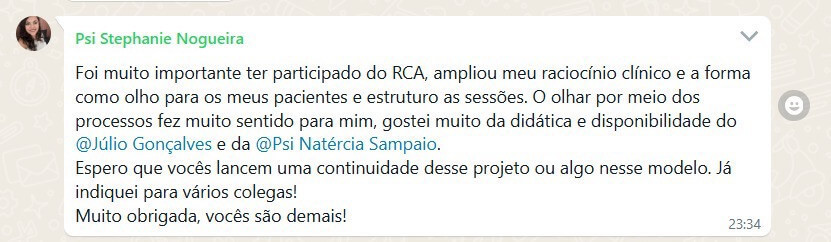

Conquiste confiança no atendimento: Domine o Modelo Transdiagnóstico
e simplifique seu raciocínio clínico!
Descubra como usar os processos, que unem diversos transtornos, para criar abordagens seguras e dar os primeiros passos, mesmo nos casos mais desafiadores e com múltiplas demandas.
11 de fevereiro de 2025
À partir das 20h
 Mais Segurança no Atendimento: Abandone os modelos genéricos e atenda com confiança e clareza.
Mais Segurança no Atendimento: Abandone os modelos genéricos e atenda com confiança e clareza.
 Psicólogos: Que buscam aprimorar seu raciocínio clínico e entregar tratamentos eficazes e personalizados aos pacientes.
Psicólogos: Que buscam aprimorar seu raciocínio clínico e entregar tratamentos eficazes e personalizados aos pacientes.

![Depoimento 2: Júlio e Nat! @Júlio Gonçalves | @Psi Natércia Sampaio Obrigada por todos os ensinamentos durante esse tempo. Obrigada pelas mudanças que vocês fizeram na minha trajetória na clínica, eu precisava muito do RCA. Sou muito grata a vocês por tudo! Talvez vocês não tem noção das transformações que geraram, em mim foi algo surreal! Muito obrigada. (Emoji coração cor laranja) Depois de todos esses encontros a minha admiração por vocês só aumentou. (Emoji com cara apaixonado com coraçõezinhos ao redor) Vocês são diferenciados!! Se puderem postar aqui as novidades de vocês eu agradeço! (Emoji coração cor laranja) Feliz ano novo a todos e um 2025 de muito sucesso! (Emoji de confete de festa estourando)](./assets/images/deps/mercia.jpg) 
